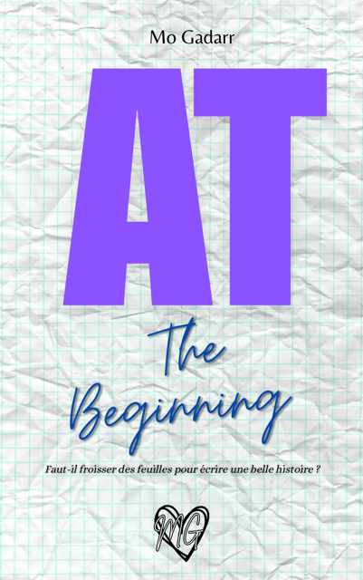

AT The Beginning
Plus qu'une histoire d'amour.
Un plaidoyer pour les femmes.
Elle est sortie !
Vous comme moi, vous l'attendiez et il est enfin là. AT The beginning est sorti. Plus qu'une histoire, c'est un véritable plaidoyer pour les femmes.
De quoi ça parle ?
Je n'aime pas spoiler mais je suis obligée de le faire un peu pour présenter AT. On peut dire que c'est avant tout une histoire d'amour, de celles qui emportent tout sur son passage, le cœur et l'âme. Athénaïs a 18 ans et elle commence des études littéraires à l'université de Philadelphie, aux États-Unis. Quand elle rencontre Nick, le coup de foudre est réciproque, violent. La jeune fille se met en tête de réussir coûte que coûte cette union afin de la classer dans la catégorie des histoires d'amour légendaires, et ce, malgré les nombreuses tensions qui apparaissent. L'histoire se prolonge sur six années complètes durant lesquelles nous allons vivre avec Athénaïs tout ce qu'implique d'aimer quelqu'un...et tout ce que ça cela ne devrait pas impliquer. Nous la voyons passer du statut de la petite étudiante à celui d'écrivaine lue par des millions de personnes. Nous la voyons de jeune fille à femme.
Qu'est-ce que ça dénonce ?
Au-delà d'une histoire d'amour, AT montre tout ce que les codes moraux et sociaux nous mettent en tête afin que nous acceptions ce qui ne l'est pas. Impossible de lire AT sans penser aux autres femmes qui, tout comme mon héroïne, ont cru à la toute puissance de l'amour. On ne peut pas s'empêcher de penser à notre propre définition de l'amour.
Pourquoi il faut foncer lire AT The Beginning ?
Parce qu'il explique comment on peut se retrouver à la place d'AT. Elle est toutes les femmes et elle n'est pas plus bête, ni plus faible. Elle est juste amoureuse. De plus, avec le prix de lancement, on en a pour son argent : 384 pages qui sauront vous tenir en haleine (en broché, c'est 584 pages !)
Je vous laisse donc aller découvrir mon AT. Je multiplierai les posts sur mes réseaux sociaux.
Bonne lecture !
Mo
